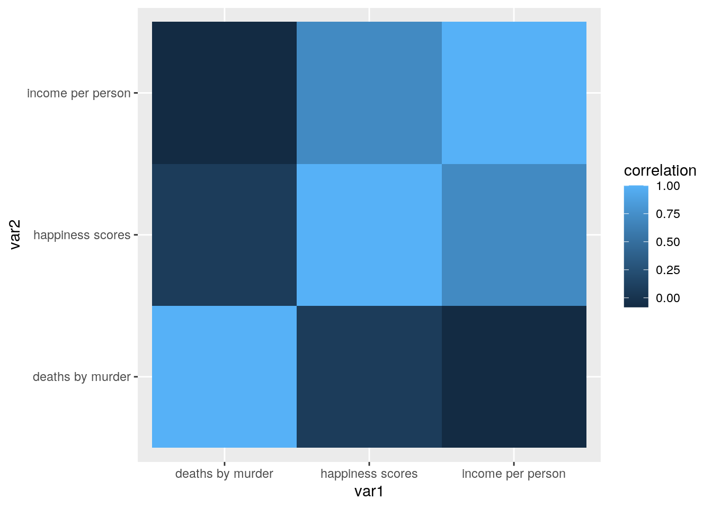
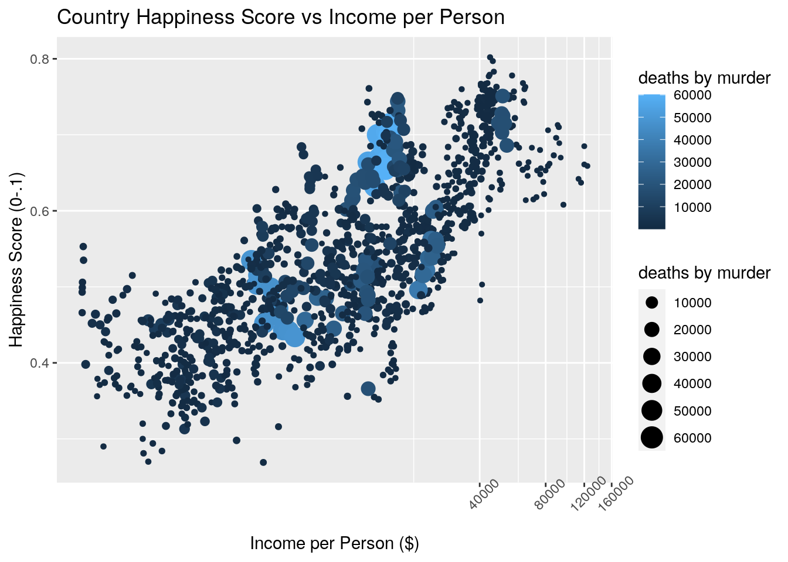
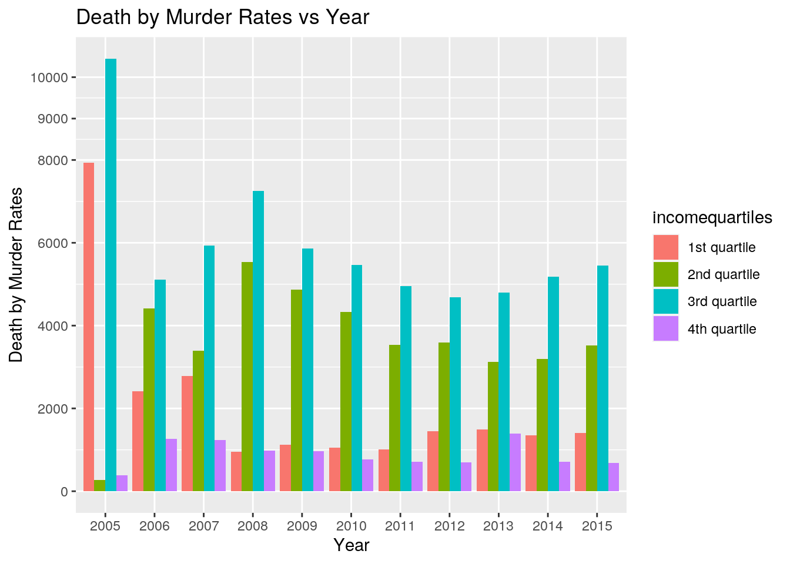
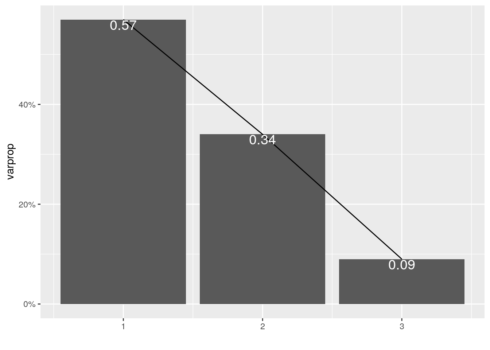
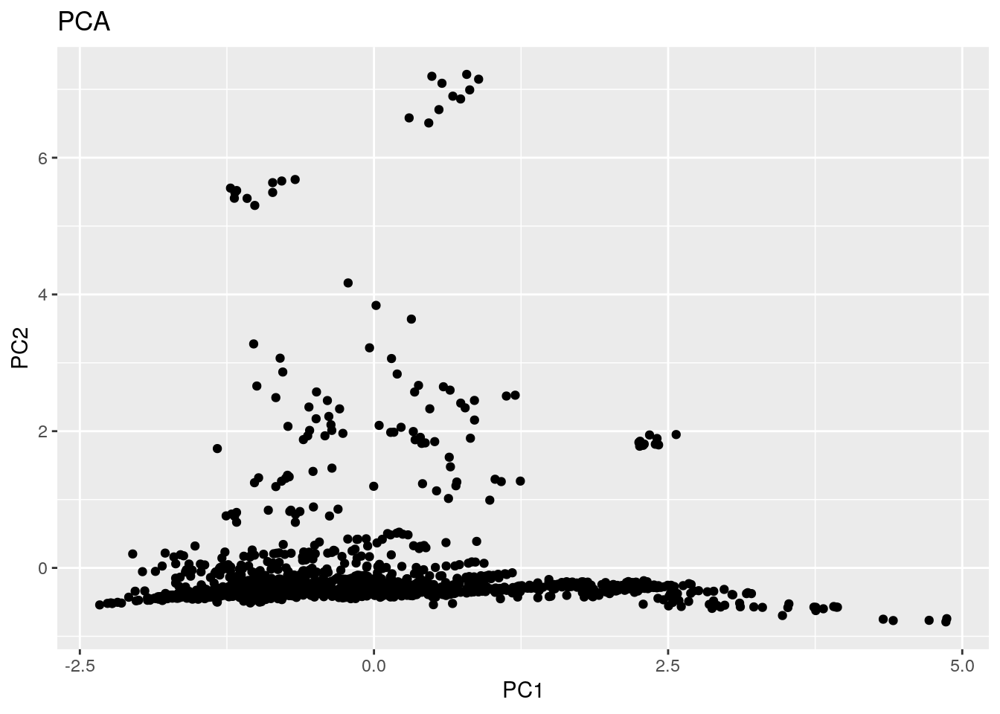

knitr::opts_chunk$set(echo = TRUE, eval = TRUE, fig.align = "center",
warning = F, message = F, tidy = TRUE, tidy.opts = list(width.cutoff = 60),
R.options = list(max.print = 100))library(readr)
hapiscore_whr_2_ <- read_csv("hapiscore_whr.csv")
murder_total_deaths_2_ <- read_csv("murder_total_deaths(2).csv")
income_per_person_gdppercapita_ppp_inflation_adjusted_2_ <- read_csv("income_per_person_gdppercapita_ppp_inflation_adjusted_2.csv")For this project, I chose three different datasets. These datasets were: a country’s happiness score, the total deaths by murder in each country, and the average income per person in each country. I chose these three datasets since I thought it would be interesting to see if there was a correlation between a country’s happiness and their average income or the number of deaths by murder. All three data sets have the two same categorical variables - Country and Year (2005 - 2010). Alongside the categorical variables, the three numerical variables used in this project were each countries happiness rating, the average income per individual, and the total number of deaths by murder in each country. All data used in this project was acquired at www.gapminder.com. I hypothesize that happier countries will have higher average incomes and lower murder rates.
library(tidyr)
library(dplyr)
library(ggplot2)
# tidy
tidyhappiness <- hapiscore_whr_2_ %>% gather("2005", "2006",
"2007", "2008", "2009", "2010", "2011", "2012", "2013", "2014",
"2015", key = "year", value = "happiness scores") %>% arrange(country,
year)
tidyincome <- income_per_person_gdppercapita_ppp_inflation_adjusted_2_ %>%
gather("2005", "2006", "2007", "2008", "2009", "2010", "2011",
"2012", "2013", "2014", "2015", key = "year", value = "income per person") %>%
arrange(country, year)
tidymurderdeaths <- murder_total_deaths_2_ %>% gather("2005",
"2006", "2007", "2008", "2009", "2010", "2011", "2012", "2013",
"2014", "2015", key = "year", value = "deaths by murder") %>%
arrange(country, year)
# remove NA values
tidyhappiness <- tidyhappiness %>% na.omit()
tidyincome <- tidyincome %>% na.omit()
tidymurderdeaths <- tidymurderdeaths %>% na.omit()None of my datasets were tidy; therefore, I tidied them using the gather function. By doing so, I made sure that every column was a variable and that every row was an observation. I did so by gathering all years from 2005 - 2015 (since all datasets had these years in common) and created a new column with them titled “Year”. Additionally, I made a new corresponding column for each dataset. For the happiness dataset, I created a new column titled “happiness score,” which ranked each country on a happiness scale from 0 to 1. For the income dataset, I made a new column titled “income per person,” which included all the average incomes per person in each country and year. For my murders dataset, I created a column titled “death by murders,” representing the total number of deaths due to murders in each country every year. Lastly, I removed any NA values from all datasets using the na.omit() function.
library(dplyr)
mergeddata <- tidyhappiness %>% left_join(tidyincome) %>% left_join(tidymurderdeaths)To merge all three of my datasets, I found a common variable between them. In this case, all of my datasets had two common variables, ‘Year’ and ‘Country.’ I was then able to merge them using the left_join function. No cases had to be dropped since each dataset had the same years and countries. After successfully combining my data, the new dataset (called ‘mergeddata’) had 1,251 observations. My three numeric variables used were happiness scores, income, and deaths.
DPLYR functions:
library(tidyverse)
mergeddata %>% group_by(country) %>% summarize(mean(`deaths by murder`,
na.rm = T)) %>% head()## # A tibble: 6 x 2
## country `mean(\`deaths by murder\`, na.rm = T)`
## <chr> <dbl>
## 1 Afghanistan 5318.
## 2 Albania 70.3
## 3 Algeria 457.
## 4 Angola 1020
## 5 Argentina 2440
## 6 Armenia 126.mergeddata %>% select(country, `happiness scores`) %>% head()## # A tibble: 6 x 2
## country `happiness scores`
## <chr> <dbl>
## 1 Afghanistan 0.372
## 2 Afghanistan 0.44
## 3 Afghanistan 0.476
## 4 Afghanistan 0.383
## 5 Afghanistan 0.378
## 6 Afghanistan 0.357mergeddata %>% mutate(`happiness scores (1-10)` = `happiness scores` *
10) %>% head()## # A tibble: 6 x 6
## country year `happiness scor… `income per per… `deaths by murd…
## <chr> <chr> <dbl> <dbl> <dbl>
## 1 Afghan… 2008 0.372 1270 4960
## 2 Afghan… 2009 0.44 1500 4990
## 3 Afghan… 2010 0.476 1670 4940
## 4 Afghan… 2011 0.383 1630 5020
## 5 Afghan… 2012 0.378 1770 5190
## 6 Afghan… 2013 0.357 1810 5560
## # … with 1 more variable: `happiness scores (1-10)` <dbl>mergeddata %>% filter(year == "2015") %>% arrange(desc(`deaths by murder`,
na.rm = T))## # A tibble: 140 x 5
## country year `happiness scores` `income per person` `deaths by murder`
## <chr> <chr> <dbl> <dbl> <dbl>
## 1 Brazil 2015 0.655 14800 60100
## 2 India 2015 0.434 5740 48300
## 3 Russia 2015 0.6 24500 24200
## 4 Mexico 2015 0.624 17500 21100
## 5 China 2015 0.53 13500 18800
## 6 South Africa 2015 0.489 12400 18800
## 7 United States 2015 0.686 53200 18100
## 8 Colombia 2015 0.639 13100 16700
## 9 Philippines 2015 0.555 6850 14200
## 10 Venezuela 2015 0.557 15600 12400
## # … with 130 more rowsFirst, I used the ‘group_by’ and the ‘summarize’ function to find the country with the most deaths by murder, which was Brazil which was 61,000 deaths by murder every year. Next, I used the ‘select’ function to select for ‘happiness scores’ and find the country with the highest score: Denmark, with a score of 0.802. To make the data easier to read, I used the ‘mutate’ function to create a new variable called “happiness scores (1-10)”, which converted all the happiness scores into whole numbers from a scale of 1 - 10. Lastly, I used the ‘filter’ function to get all the data from 2015 and used the ‘arrange’ function to organize the number of deaths in descending order. I found that Denmark (who had the highest happiness score) also had one of the lowest death by murder rates. (To save room when knitting the file, I added head() at the end of each line of code.)
Summary Statistics:
mergeddata %>% group_by(country) %>% summarize_if(is.numeric,
mean, na.rm = T) %>% head()## # A tibble: 6 x 4
## country `happiness scores` `income per person` `deaths by murder`
## <chr> <dbl> <dbl> <dbl>
## 1 Afghanistan 0.390 1652. 5318.
## 2 Albania 0.509 10089. 70.3
## 3 Algeria 0.568 13150 457.
## 4 Angola 0.442 6635 1020
## 5 Argentina 0.644 18640 2440
## 6 Armenia 0.440 7228 126.mergeddata %>% group_by(country) %>% summarize_if(is.numeric,
sd, na.rm = T) %>% head()## # A tibble: 6 x 4
## country `happiness scores` `income per person` `deaths by murder`
## <chr> <dbl> <dbl> <dbl>
## 1 Afghanistan 0.0500 187. 438.
## 2 Albania 0.0506 802. 5.03
## 3 Algeria 0.0459 265. 11.9
## 4 Angola 0.0816 201. 25.8
## 5 Argentina 0.0267 1015. 178.
## 6 Armenia 0.0211 662. 8.09mergeddata %>% group_by(country) %>% summarize_if(is.numeric,
var, na.rm = T) %>% head()## # A tibble: 6 x 4
## country `happiness scores` `income per person` `deaths by murder`
## <chr> <dbl> <dbl> <dbl>
## 1 Afghanistan 0.00250 34936. 192136.
## 2 Albania 0.00256 643612. 25.3
## 3 Algeria 0.00211 70000 142.
## 4 Angola 0.00667 40367. 667.
## 5 Argentina 0.000712 1029333. 31711.
## 6 Armenia 0.000444 438573. 65.5mergeddata %>% group_by(country) %>% summarize_if(is.numeric,
min, na.rm = T) %>% head()## # A tibble: 6 x 4
## country `happiness scores` `income per person` `deaths by murder`
## <chr> <dbl> <dbl> <dbl>
## 1 Afghanistan 0.313 1270 4940
## 2 Albania 0.455 8450 67.5
## 3 Algeria 0.532 12900 447
## 4 Angola 0.379 6350 990
## 5 Argentina 0.596 16700 2210
## 6 Armenia 0.418 6110 114mergeddata %>% group_by(country) %>% summarize_if(is.numeric,
max, na.rm = T) %>% head()## # A tibble: 6 x 4
## country `happiness scores` `income per person` `deaths by murder`
## <chr> <dbl> <dbl> <dbl>
## 1 Afghanistan 0.476 1810 6060
## 2 Albania 0.587 11000 82.7
## 3 Algeria 0.635 13500 474
## 4 Angola 0.559 6810 1050
## 5 Argentina 0.678 19800 2680
## 6 Armenia 0.488 8170 135Using the summary statistics functions, I was able to analyze my numerical variables further. The five summary statistics I used were mean, standards deviation, variation, min, and max. In the first set of codes (up above), I grouped my numerical values by ‘year.’ By doing this, I was able to view the mean, sd, min, and max of happiness scores, incomes, and death rates by year. One interesting result I found was that the countries’ mean happiness scores decreased as the years had progressed, while mean income and deaths by murder increased. In my second set of codes (down below), I grouped my numerical values by ‘country.’ This had allowed me to compare the different numerical data between countries and look for any correlation.
mergeddata %>% group_by(year) %>% summarize_if(is.numeric, mean,
na.rm = T) %>% head()## # A tibble: 6 x 4
## year `happiness scores` `income per person` `deaths by murder`
## <chr> <dbl> <dbl> <dbl>
## 1 2005 0.645 26994. 3635.
## 2 2006 0.518 14883. 3200.
## 3 2007 0.542 14735. 3439.
## 4 2008 0.542 15766 3409.
## 5 2009 0.545 16968. 3234.
## 6 2010 0.549 18341. 2957.mergeddata %>% group_by(year) %>% summarize_if(is.numeric, sd,
na.rm = T) %>% head()## # A tibble: 6 x 4
## year `happiness scores` `income per person` `deaths by murder`
## <chr> <dbl> <dbl> <dbl>
## 1 2005 0.0919 13389. 10671.
## 2 2006 0.110 19023. 8001.
## 3 2007 0.105 14387. 8969.
## 4 2008 0.119 16167. 8703.
## 5 2009 0.104 19395. 8453.
## 6 2010 0.114 19512. 8111.mergeddata %>% group_by(year) %>% summarize_if(is.numeric, var,
na.rm = T) %>% head()## # A tibble: 6 x 4
## year `happiness scores` `income per person` `deaths by murder`
## <chr> <dbl> <dbl> <dbl>
## 1 2005 0.00844 179254563. 113865374.
## 2 2006 0.0121 361861146. 64011864.
## 3 2007 0.0111 206998189. 80445541.
## 4 2008 0.0141 261375070. 75738933.
## 5 2009 0.0108 376150596. 71445118.
## 6 2010 0.0129 380735082. 65786622.mergeddata %>% group_by(year) %>% summarize_if(is.numeric, min,
na.rm = T) %>% head()## # A tibble: 6 x 4
## year `happiness scores` `income per person` `deaths by murder`
## <chr> <dbl> <dbl> <dbl>
## 1 2005 0.472 3850 66.2
## 2 2006 0.32 777 17.9
## 3 2007 0.328 772 22.5
## 4 2008 0.281 718 2.5
## 5 2009 0.341 615 5.51
## 6 2010 0.323 614 5.4mergeddata %>% group_by(year) %>% summarize_if(is.numeric, max,
na.rm = T) %>% head()## # A tibble: 6 x 4
## year `happiness scores` `income per person` `deaths by murder`
## <chr> <dbl> <dbl> <dbl>
## 1 2005 0.802 45700 54400
## 2 2006 0.767 96400 48400
## 3 2007 0.783 69200 55300
## 4 2008 0.797 66800 56000
## 5 2009 0.768 113000 57000
## 6 2010 0.777 120000 57500matrix <- mergeddata %>% na.omit() %>% select_if(is.numeric) %>%
cor()
matrix## happiness scores income per person deaths by murder
## happiness scores 1.00000000 0.70536961 0.06880059
## income per person 0.70536961 1.00000000 -0.08330391
## deaths by murder 0.06880059 -0.08330391 1.00000000tidycor <- matrix %>% as.data.frame %>% rownames_to_column("var1") %>%
pivot_longer(-1, names_to = "var2", values_to = "correlation")
tidycor %>% ggplot(aes(var1, var2, fill = correlation)) + geom_tile()
ggplot(mergeddata, aes(`income per person`, `happiness scores`,
color = `deaths by murder`)) + geom_point(aes(size = `deaths by murder`)) +
coord_trans(x = "log2") + ggtitle("Country Happiness Score vs Income per Person") +
xlab("Income per Person ($)") + ylab("Happiness Score (0-.1)") +
theme(axis.text.x = element_text(angle = 45)) The graph above maps three variables: a country’s average happiness score, a countries average income per person, and a countries average death by murder rate. The X-axis represents income while the Y-axis represents the happiness score. Each data point was also sized and colored accordingly based on the number of deaths by murder. I found doing both made it easier to visualize since there were many data points present. An apparent trend portrayed in this graph is that that as the average income per person had increased, so had the country’s happiness score.
# income --> quartile income
mergeddata$incomequartiles <- cut_number(mergeddata$`income per person`,
n = 4, labels = c("1st quartile", "2nd quartile", "3rd quartile",
"4th quartile"))
ggplot(mergeddata, aes(year, `deaths by murder`, fill = incomequartiles)) +
geom_bar(position = "dodge", stat = "summary", fun = mean) +
scale_y_continuous(name = "Death by Murder Rates", breaks = c(0,
2000, 4000, 6000, 8000, 9000, 10000)) + xlab("Year") +
ggtitle("Death by Murder Rates vs Year") The graph above maps three different variables: Death by Murder Rates, Years, and Income Quartiles. To view the other incomes better, I broke them down into quartiles and then added them into a separate column in my dataset. Although hard to tell, one apparent trend shown in the graph is that the countries with the highest income per person have the lowest death by murder rate every year.
# 1. Prepare Data
normdata <- mergeddata %>% select_if(is.numeric) %>% na.omit %>%
scale
# 2. PCA (running princomp)
pca <- princomp(normdata)
summary(pca, loadings = T)## Importance of components:
## Comp.1 Comp.2 Comp.3
## Standard deviation 1.3054337 1.0075088 0.52760862
## Proportion of Variance 0.5685068 0.3386287 0.09286452
## Cumulative Proportion 0.5685068 0.9071355 1.00000000
##
## Loadings:
## Comp.1 Comp.2 Comp.3
## happiness scores 0.706 0.115 0.699
## income per person 0.708 -0.700
## deaths by murder 0.989 -0.147# 3. Choose number of principal components
eigenval <- pca$sdev^2
varprop = round(eigenval/sum(eigenval), 2)
ggplot() + geom_bar(aes(y = varprop, x = 1:3), stat = "identity") +
xlab("") + geom_path(aes(y = varprop, x = 1:3)) + geom_text(aes(x = 1:3,
y = varprop, label = round(varprop, 2)), vjust = 1, col = "white",
size = 5) + scale_y_continuous(breaks = seq(0, 0.6, 0.2),
labels = scales::percent) + scale_x_continuous(breaks = 1:3)
# 4. Plotting PC scores
dataframe <- data.frame(PC1 = pca$scores[, 1], PC2 = pca$scores[,
2])
ggplot(dataframe, aes(PC1, PC2)) + geom_point() + ggtitle("PCA") +
xlab("PC1") + ylab("PC2")
The two PC components used were Component 1 and Component 2 since their cumulative proportion of variance was greater than 80%. Looking at comp.1 and the graph, the data points that are high on PC1 tend to have high happiness scores and income per person. Mean while, the datapoints that are high on PC1 tend to have high death by murder rates and low happiness scores. Looking at the graph again PC1 also had higher variation than PC2 since most of the data points on the PC2 axis are below 0.